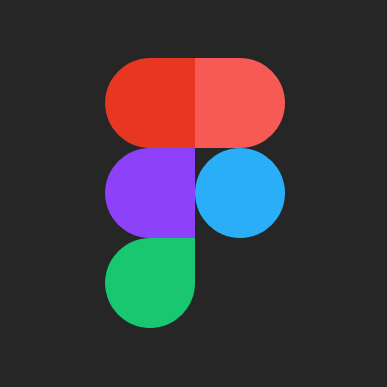
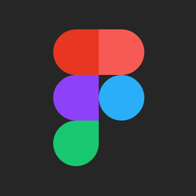

Talk to me ^_^


What motivates me: I always want better for people!
What I love: Orchids, spilling paint on things, experimental music, Tetris (play me).
In 2018 while working as a marketing specialist at Saige Chefs, my team noticed a massive drop-off in our funnel during onboarding. I studied user behavior in FullStory and recorded points of frustration before presenting a solution in the form of what I later learned to be a wireframe. “Nice UX work,” my manager commented.
I thanked her- then promptly Googled, “What is UX?”
I was instantly obsessed.
To learn more about how to speak with users, I took on a customer success role at Matcha. Our team worked closely with product and engineering. The more I practiced empathy for our users, the more I wanted to learn how to implement empathy in the design process.
In 2020 I took the plunge and enrolled in Georgia Tech’s UI/UX Bootcamp.
Creating wireframes, page layouts, and delightful experiences for users and stakeholders in a digital format.
Speaking with people, observing user tasks and extracting insights via data synthesis with my team.
I learned graphic design for pring in magazine design classes. I use this skill for everything I do- even spreadsheets!
 
